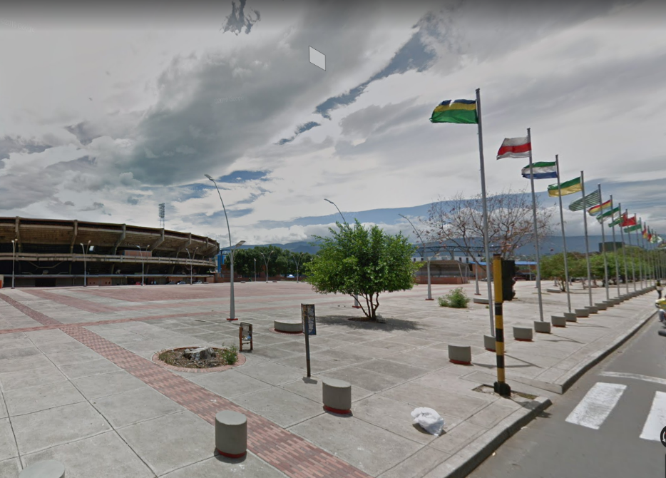

<div class="race-container tilt-in-fwd-br">
    <section class="race-title-map">
        <div>
            <div class="rotated-tag">
                <h1>DETALLES</h1>
            </div>
            <h1>CORRE POR CUCUTA <br> &nbsp;&nbsp;&nbsp;&nbsp; <span>21K</span></h1>
            <h2>
                La carrera de veintiún kilómetros será la de mayor extensión, recorrerá la ciudad de la siguiente manera.
            </h2>
        </div>
        <div>
            <div class="map-container">
                
            </div>
            <h1 class="route-title">MAPA DE RUTA</h1>
        </div>
    </section>
    <section class="race-title-map second">
        <div>
            <h1>INICIO Y FINAL <br> DE LA <span>CARRERA</span></h1>
            <h2>
                PLAZA DE BANDERAS <br>
                ESTADIO GENERAL SANTANDER
            </h2>
        </div>
        <div>
            <div class="map-container">
                
            </div>
            <h1 class="route-title">PUNTO DE PARTIDA</h1>
        </div>
    </section>
    <section class="race-title-map third">
       <div>
           <h1>HORA INICIO DE CARRERA</h1>
           <h2>06:00 AM (Hora colombiana)</h2>
       </div>
       <div>
            <h1>PRECIO DE LA CARRERA</h1>
            <h2>Etapa Temprana</h2>
            <h2 style="color: yellow!important; font-weight: 600;">$ 80.000 COP</h2>
        </div>
    </section>
</div>